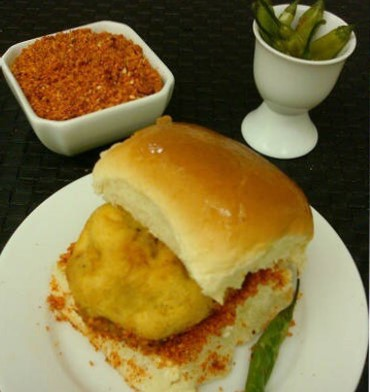
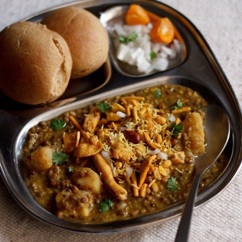
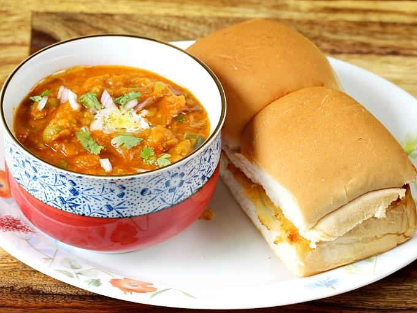
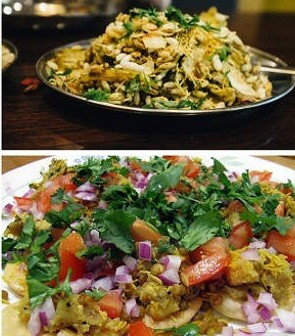

1.Vada Pav

Vada Pav, or the Poor Man’s Burger, is among the top Mumbai street food dishes. It is essentially a bun bread (pav) and a fritter(vada) stuffed with mashed potato. Vada pav, alternatively spelt vada pao, wada pav, or wada pao, is a vegetarian fast food dish native to the state of Maharashtra. The dish consists of a deep fried potato dumpling placed inside a bread bun (pav) sliced almost in half through the middle. It is generally accompanied with one or more chutneys and a green chilli pepper. Although it originated as cheap street food in Mumbai, it is now served in food stalls and restaurants across India. It is also called Bombay burger in keeping with its origins and its resemblance in physical form to a burger.The dish is served with spicy and sweet chutneys, fried chilies, and garlic powder chutney.
Popular Variants: Schezwan, cheese, and grilled Vada Pav
Where To Try: Anand Vada Pav Stall and Parleshwar Vada Pav Samrat in Vile Parle West
2.Misal Pav

Misal pav is a popular dish from Maharashtra, India. It consists of misal (a spicy curry usually made moth beans) and pav (a type of Indian bread roll).The final dish is topped with farsan, "farsan" or "sev", onions, lemon and coriander (cilantro). It is usually served with bread or rolls toasted with butter and buttermilk or curd and papad. It is served as a breakfast dish, as a snack and also as a full meal.
Misal Pav is a snack that is very easy to prepare and a hot favourite among most. The curry is made from mixed sprouts and lentils that are rich in proteins. The spicy flavour of this dish fits well with the typical Indian taste buds. The spice content can be altered based on choice.
Where To Try: Mamledar Kacheri at Naupada in Thane West
3.Pav Bhaji

Another popular Bombay street food is the Pav Bhaaji. An assortment of mashed vegetables cooked with spices and seasonings (bhaaji) is served with bun bread (pav) heated on a pan. Butter is applied on the bun. If you are roaming hungry and looking for street food in mumbai at night, then you will find at least one Pav Bhaji stall open late in night in your area where you can kill your hunger pangs.
The dish originated in the 1850s as a fast lunchtime dish for textile mill workers in Mumbai. Pav bhaji was later served at restaurants throughout the city. Pav bhaji is now offered at outlets from simple hand carts to formal restaurants in India and abroad.
Where To Try: Cannon Pav Bhaji on Dadabhaji Naoroji Road near CST
4.BhelPuri SevPuri

Among the vegetarian dishes of street food in Mumbai, Bhel Puri and Sev Puri are the most popular ones. Bhel Puri is a Marathi Chaat made out of puffed rice, vegetables, and a tangy tamarind sauce. Sev Puri is another chaat essentially made of Puri loaded with diced potatoes, onions, 3 chutneys (tamarind, chili, and garlic), and topped with sev (small pieces of crunchy noodles made from chickpea flour paste). It is seasoned with raw mango or a hint of lemon and chaat masala.
Where To Try: Sharmajee’s and Badshah’s at Girgaon Chaupati Beach at Marina Drive